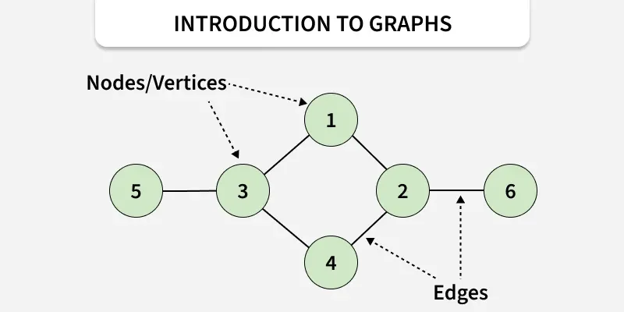
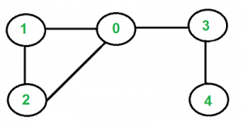
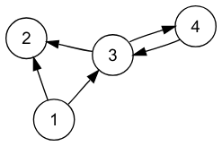
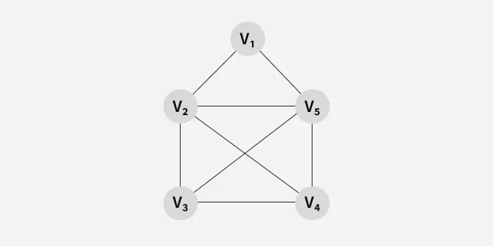
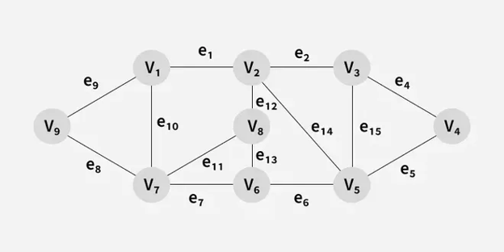
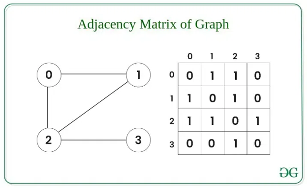
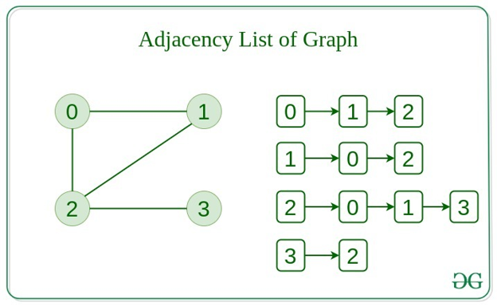

Vertex
A node such as city A, user B or computer C.
NON-LINEAR DATA STRUCTURE
Build connections, inspect their representation and compare how BFS and DFS explore a graph.
01 / UNDERSTAND
A graph is a non-linear data structure consisting of vertices and edges. A vertex represents an object, while an edge represents a relationship between two objects.
For example, cities can be vertices and roads can be edges. Unlike an array or linked list, a graph does not require one fixed sequential order.

A node such as city A, user B or computer C.
A connection between two vertices.
A vertex connected directly by an edge.
A sequence of vertices joined by edges.
02 / TYPES
Edge A—B can be followed from A to B and from B to A.

Edge A→B allows movement from A to B. It does not automatically allow B→A.

Every edge is treated equally. BFS can find a path with the fewest edges.

Each edge stores a cost such as distance, price or travel time.

Yes. A tree is a connected graph with no cycles. Not every graph is a tree because graphs may have cycles, disconnected components or multiple paths.
03 / REPRESENTATION
A V × V table. matrix[i][j] is 1 when an edge exists and 0 otherwise.

Each vertex stores a list of its neighboring vertices.

An adjacency list is usually efficient for a sparse graph with relatively few edges. An adjacency matrix can be useful when the graph is dense or edge existence must be checked frequently.
04 / EXPERIMENT
Add or remove edges, then select a starting vertex. Use Next Step to inspect how BFS or DFS changes its working structure.
Select an operation to interact with the graph.
ADJACENCY LIST
05 / CONNECT THE VISUAL TO C
These examples use an adjacency matrix with six vertices labeled A to F.
Examples will appear when graph-examples.js loads.
06 / PRACTICE
Which structure does BFS use to process the earliest discovered vertex first?
Choose an answer.
If a directed graph contains A→B, what is guaranteed?
Choose an answer.
With an adjacency list, what is the time complexity of visiting all reachable vertices and edges?
Choose an answer.
Questions solved: 0 / 3
07 / APPLY
Modify the graph until a path exists from A to F. Then press Check Path. A valid path may use any intermediate vertices.
Build a path, then check it.
A path does not need to be one direct edge. A → C → D → E → F is also a valid path when every required edge exists.
Cities are vertices and roads are edges.
Users and their relationships form a graph.
Devices and communication links form a graph.
States and possible actions form a search graph.
Can you explain adjacency lists, BFS and DFS?